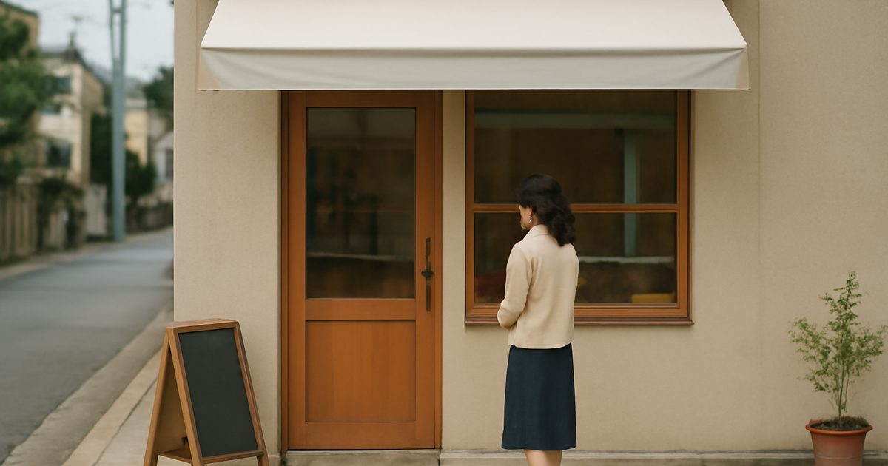
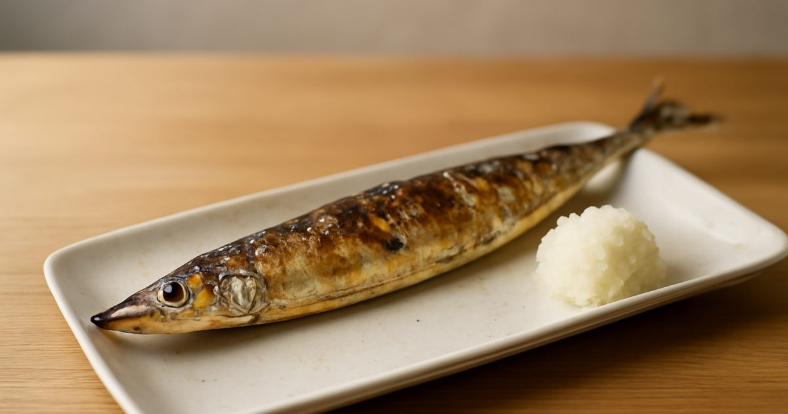

일본어 지문
매일 아침 새로 올라오는 JLPT N3(기초 N4~N5) 일본어 읽기예요. 메일로 받기
이번 주 단어 복습→2026년 10월
10월 31일 토요일일상과 문화온천 이용법
10월 30일 금요일과학서리
10월 29일 목요일사회금요일 재택근무
10월 28일 수요일사회감의 날
10월 27일 화요일일상과 문화군고구마
10월 26일 월요일일상과 문화손편지 쓰기
10월 25일 일요일일상과 문화겨울옷 꺼내기
10월 24일 토요일일상과 문화신사 참배
10월 23일 금요일과학무지개
10월 22일 목요일사회문화제 준비
10월 21일 수요일사회아시아 패럴림픽
10월 20일 화요일일상과 문화주먹밥
10월 19일 월요일일상과 문화도서관 카드
10월 18일 일요일일상과 문화갑자기 내린 가을비
10월 17일 토요일일상과 문화전철 타는 법
10월 16일 금요일과학달의 모양
10월 15일 목요일사회첫 아르바이트
10월 14일 수요일사회쓰레기 분리배출

10월 13일 화요일일상과 문화동네 빵집 10월 12일 월요일일상과 문화가을 요리 10월 11일 일요일일상과 문화가을 밤 소리 10월 10일 토요일일상과 문화온천 안내 10월 9일 금요일과학단풍 원리 10월 8일 목요일사회잊어버린 숙제 10월 7일 수요일사회노벨화학상
10월 6일 화요일일상과 문화가을 꽁치 10월 5일 월요일일상과 문화운동회 연습 10월 4일 일요일일상과 문화가을 노을찾는 지문이 없어요.
매일 아침 일본어 지문 받기
새 일본어 지문이 올라오면 아침에 메일로 보내 드려요.
이미 구독 중이어도 같은 이메일로 다시 구독하면 수준과 언어가 바로 바뀌어요. 이메일 주소 하나로는 한 언어만 받을 수 있어요.
구독하면 영문 확인 메일(Confirm your subscription)이 가요. 메일 속 버튼을 눌러야 구독이 끝나요. 메일이 안 보이면 스팸함도 확인해 주세요.
이메일은 뉴스레터 발송에만 쓰이고, 언제든 메일 하단에서 수신거부할 수 있어요.